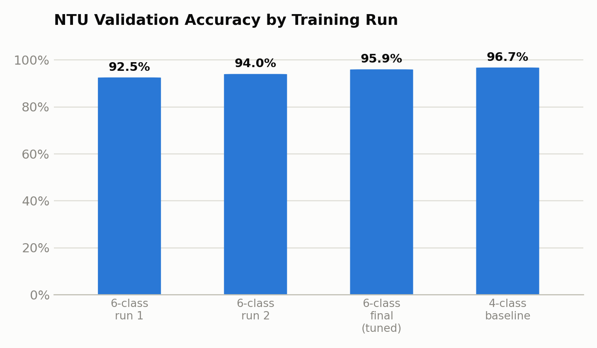
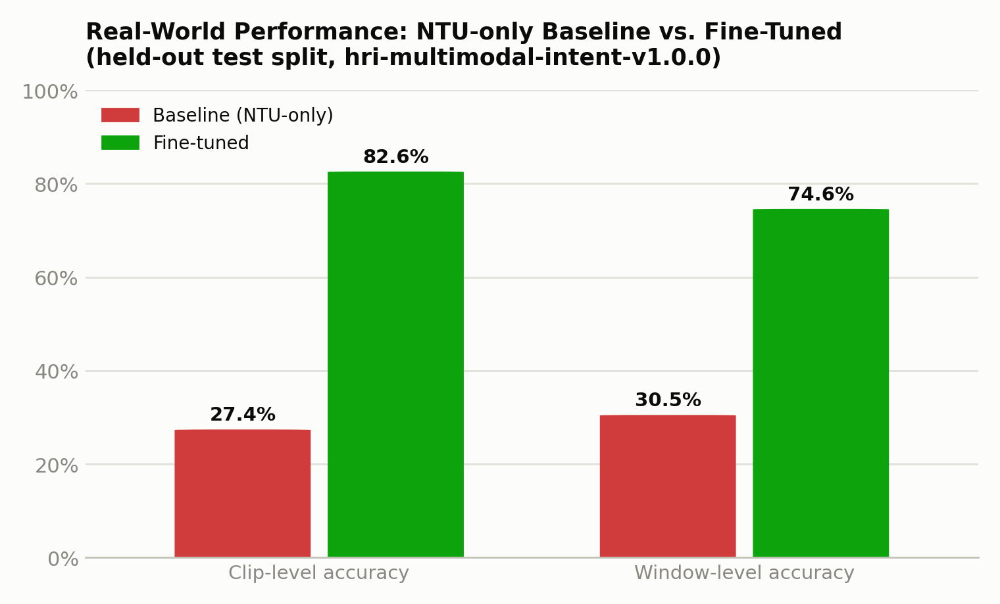
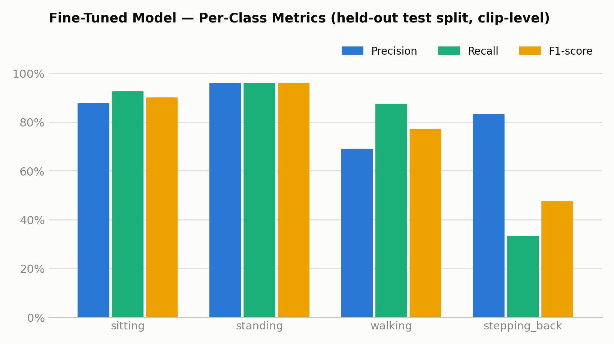
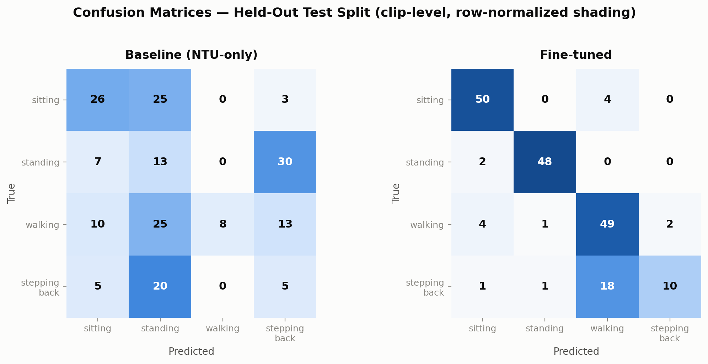
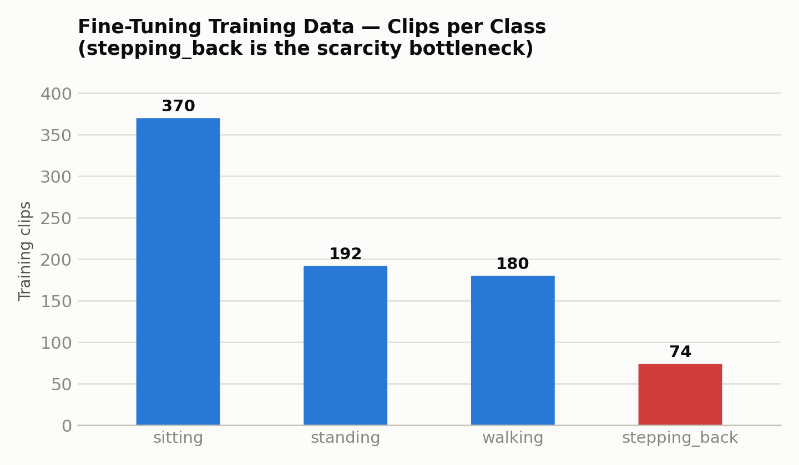

hri-multimodal-intent-v1.0.0 datasetThis report compares three successive versions of the HRI motion-recognition model
(a LayerNorm + 3-layer LSTM + attention-pooling classifier over skeleton position/velocity
windows) developed and evaluated in this project: a 6-class NTU-only model,
a 4-class NTU-only baseline, and a 4-class model fine-tuned on
real-world footage from the hri-multimodal-intent-v1.0.0 dataset.
The one class that did not fully recover is stepping_back (33.3% recall on held-out test), which is directly attributable to it being the most data-scarce class at every stage of this project — in the original NTU proxy-label mapping, in the real-world dataset's scenario coverage, and in the fine-tuning training set (74 clips vs. 180–370 for the other three classes).
All three models share the same underlying architecture (MotionLSTM: LayerNorm
input normalization → 3-layer LSTM, hidden size 256 → learned attention pooling over the
30-frame window → 2-layer MLP classification head, ≈1.42M parameters) and the same 84-dimensional
per-frame feature (14 joints × 3D position + 14 joints × 3D velocity). What changes between
versions is the class taxonomy and the training data source.
best_model_6class.ptbest_model.pt (pre-fine-tune)best_model_finetuned.pt (deployed default)Why the taxonomy changed (6→4 classes): running and
slumped were dropped between Model A and Model B. Both were built from NTU proxy
actions that do not kinematically match their intended real-world meaning — running
came only from NTU's "hopping in place" action (no true forward-gait running exists in the
NTU-60 action set), and slumped came from "falling," "headache," and "stomachache"
actions, which are fast/dynamic rather than the static, low-energy posture the class was meant
to represent. Neither was needed for the target deployment scenarios (defined in the project's
HRI scenario table), so both were removed rather than patched.
Skeleton windows are built by sliding a 30-frame window (≈1 second at the NTU capture rate)
with a 10-frame stride over each source clip, extracting a 14-joint subset, hip-centering and
shoulder-width-normalizing each frame, and computing frame-to-frame velocity as a finite
difference. NTU RGB+D action IDs are mapped onto the target motion classes (e.g. A008 "sitting
down" → sitting; A059/A060 "walking toward/apart" → walking).
Early real-world testing (webcam/video demo) showed severe, systematic misclassification —
e.g. a stationary standing person consistently classified as walking. Investigation
ruled out the initial hypothesis (sensor jitter creating spurious velocity) via ablation: zeroing
the velocity feature entirely did not change the prediction, proving the error was driven by
static posture, not motion noise. Comparing a real captured frame's joint coordinates
against the NTU training-set mean template revealed the cause: MediaPipe's pose_world_landmarks
X and Y axes are inverted relative to the Kinect/NTU training convention (documented Kinect
convention: X-left, Y-up; MediaPipe's convention is undocumented by Google but was determined
empirically to be the opposite on both axes). Negating both X and Y — a proper 180° rotation
(determinant +1, preserving skeletal handedness) rather than a single-axis mirror (determinant
−1, which produces an anatomically invalid skeleton) — was verified to restore correct
classification, and was applied at the single point where MediaPipe landmarks are mapped into
the model's joint layout.
The following pipeline was used to evaluate models B and C against
hri-multimodal-intent-v1.0.0:
Each clip's ground-truth label is inherited from its recording scenario's documented "Intended Motion" field, mapped onto the 4-class taxonomy. One scenario (S19, "move backward (run)") was excluded as ambiguous under the reduced taxonomy. Clips under 30 frames were excluded (too short for one window). This yielded 1,214 usable clips out of 1,270 total.
Because clips were recorded at inconsistent frame rates (15/23/24/25/29/30/31 FPS — including within the same scenario), each clip's extracted position trajectory is linearly resampled onto a uniform 30 Hz grid before windowing, so that a 30-frame window consistently represents ≈1 second of real time regardless of source capture rate, matching the assumption baked into training.
The dataset ships three candidate split strategies; one is explicitly named
split_random_leaky_DO_NOT_USE_FOR_EVAL, flagging that per-window random splitting
(the failure mode identified in the original NTU pipeline, where 67%-overlapping sliding windows
from the same clip could land in both train and validation) is unsafe here too. This report uses
split_scenario, which holds out entire recording scenarios — verified disjoint
between train/val/test with no scenario or subject leakage.
| Split | Clips | Used for |
|---|---|---|
| train | 816 | Fine-tuning (Model C) |
| val | 208 | Fine-tuning early stopping / model selection |
| test | 190 | Held out — never used in training or model selection; source of all real-world headline numbers in this report |
Model C warm-starts all weights from Model B's checkpoint (not a resized head — the
4-class taxonomy already matches) and continues training on the real-world train
split at a lower learning rate (2×10⁻⁴ vs. 2.2×10⁻³ for from-scratch training), with class-balanced
loss weighting and oversampling of the minority class, early-stopped on the val
split (patience 15 epochs). Training stopped at epoch 35 of a maximum 80.
All NTU-domain numbers below are on NTU RGB+D validation data — skeletons captured with the same Kinect sensor and pipeline as training, i.e. the model's native distribution.

| Class | Precision | Recall | F1 | Support |
|---|---|---|---|---|
| sitting | 0.976 | 0.972 | 0.974 | 5,990 |
| standing | 0.967 | 0.955 | 0.961 | 2,731 |
| walking | 0.950 | 0.962 | 0.956 | 1,904 |
| running | 0.937 | 0.952 | 0.944 | 909 |
| stepping_back | 0.922 | 0.931 | 0.927 | 1,664 |
| slumped | 0.949 | 0.951 | 0.950 | 2,142 |
| Accuracy | 95.93% | 15,340 | ||
stepping_back is consistently the weakest class across all three Model A training runs (85.2% precision in run 1, rising to 92.2% only after full hyperparameter tuning) — an early signal of its underlying proxy-label weakness.
| Class | Precision | Recall | F1 | Support |
|---|---|---|---|---|
| sitting | 0.979 | 0.976 | 0.977 | 5,970 |
| standing | 0.974 | 0.954 | 0.964 | 2,769 |
| walking | 0.939 | 0.971 | 0.955 | 1,962 |
| stepping_back | 0.948 | 0.952 | 0.950 | 1,650 |
| Accuracy | 96.71% | 12,351 | ||
Removing running/slumped lifted stepping_back's precision/recall from 92.2%/93.1% (Model A) to 94.8%/95.2% — evidence that its NTU-domain weakness was partly a side-effect of confusion with the poorly-defined slumped class, not purely data scarcity.
All figures in this section use the methodology in §3.3 and are computed on the held-out test split (190 clips) unless noted otherwise — clips used in neither training nor fine-tuning validation.

| Class | Precision | Recall | F1 | Support |
|---|---|---|---|---|
| sitting | 0.542 | 0.481 | 0.510 | 54 |
| standing | 0.157 | 0.260 | 0.195 | 50 |
| walking | 1.000 | 0.143 | 0.250 | 56 |
| stepping_back | 0.098 | 0.167 | 0.123 | 30 |
| Accuracy | 27.4% | 190 | ||
walking's 100% precision is not a sign of strength — it reflects the model almost never predicting walking at all (only 8 of 190 clips), so the rare hits happen to be correct. Its recall (14.3%) is the meaningful number.
| Class | Precision | Recall | F1 | Support |
|---|---|---|---|---|
| sitting | 0.877 | 0.926 | 0.901 | 54 |
| standing | 0.960 | 0.960 | 0.960 | 50 |
| walking | 0.690 | 0.875 | 0.772 | 56 |
| stepping_back | 0.833 | 0.333 | 0.476 | 30 |
| Accuracy | 82.6% | 190 | ||


standing absorbs the majority of every other class. Fine-tuned:
diagonal dominance for sitting/standing/walking; stepping_back's main confusion is with
walking (18 of 30 clips) — a far milder failure mode than the baseline's collapse.During fine-tuning, window-level validation accuracy (used for early stopping / checkpoint
selection) peaked at only 54.2%, with stepping_back collapsing to
0.1% recall on that split (733 of 782 true stepping_back windows predicted as
standing). This did not reproduce on the independently held-out
test split, where stepping_back recall was a much healthier 33.3% and no class collapsed. This
dataset's scenario-level splits can differ substantially in intrinsic difficulty (each split
holds out different whole scenarios), so validation accuracy alone was an imperfect signal here
— the final checkpoint's performance should be judged by the test-split numbers above, not the
validation curve.
Model B scored 96.7% on NTU validation and 27.4% on real-world held-out data. A 69-point gap between "how the model performs where it was measured" and "how it performs where it will be used" is the central risk this whole evaluation exercise surfaced and is why real-world, correctly-labeled evaluation data is a project requirement, not a nice-to-have.
Before the axis correction (§3.2), real-world testing showed near-universal misclassification toward whichever class a mismatched skeleton happened to resemble (observed as a near-universal "everything is walking" failure in earlier testing on the original 6-class model). The fix was a two-line change (negate X, Y at the single point MediaPipe landmarks are mapped into the model's joint layout) but required a structured investigation — ablation testing to rule out sensor jitter, and joint-by-joint comparison against training templates — to identify correctly, since MediaPipe's world-landmark axis convention is undocumented by Google.
Even after the axis fix, an NTU-only model still only reached 27.4% real-world accuracy — confirming a genuine distributional gap between Kinect- and MediaPipe-estimated skeletons (e.g. differing depth-axis noise characteristics, differing limb-proportion estimation) beyond the axis bug. ~816 real, correctly-labeled clips were enough to close most of this gap via fine-tuning.

stepping_back was the weakest class in Model A, improved but remained the weakest in Model B, and remains the weakest — though substantially improved — in Model C. At every stage the common thread is data volume/quality, not an architectural limitation.
running and slumped built from NTU proxy actions that do not
kinematically match their intended meaningstepping_back consistently the weakest class across all 3 training runsstepping_back precision/recall improved over Model A purely from removing
confusion with slumpedwalking recall collapses to 14.3% on real datastanding becomes a catch-all, absorbing most other classes' real-world
clipsstepping_back recall only 33.3% — the clear remaining gap, driven by
having the fewest fine-tuning examples (74 clips) of any classThe project's three model iterations tell a coherent story: architecture and NTU-domain training quality were never the bottleneck (all three models exceed 95% on their native validation data); the bottleneck was the gap between training-sensor and deployment-sensor data distributions, compounded by an undiagnosed coordinate-convention bug. Fixing the bug and fine-tuning on a modest amount of correctly-labeled, target-domain data resolved the large majority of this gap.
best_model_finetuned.pt) as the default —
already wired into inference.py, webcam_demo.py, and
video_demo.py.Run 1 — accuracy 92.484%
| Class | Precision | Recall | F1 | Support |
|---|---|---|---|---|
| sitting | 0.957 | 0.942 | 0.949 | 5,990 |
| standing | 0.922 | 0.910 | 0.916 | 2,731 |
| walking | 0.912 | 0.940 | 0.926 | 1,904 |
| running | 0.906 | 0.916 | 0.911 | 909 |
| stepping_back | 0.852 | 0.883 | 0.867 | 1,664 |
| slumped | 0.919 | 0.920 | 0.919 | 2,142 |
Run 2 — accuracy 93.950%
| Class | Precision | Recall | F1 | Support |
|---|---|---|---|---|
| sitting | 0.959 | 0.958 | 0.958 | 5,990 |
| standing | 0.944 | 0.927 | 0.936 | 2,731 |
| walking | 0.926 | 0.946 | 0.936 | 1,904 |
| running | 0.928 | 0.924 | 0.926 | 909 |
| stepping_back | 0.884 | 0.898 | 0.891 | 1,664 |
| slumped | 0.941 | 0.937 | 0.939 | 2,142 |
Run 3 (final, post hyperparameter-tuning, 150 epochs) — accuracy 95.926% — hyperparameters: hidden_size=256, num_layers=3, dropout=0.35, lr=0.00221, weight_decay=0.00436, batch_size=128
| Class | Precision | Recall | F1 | Support |
|---|---|---|---|---|
| sitting | 0.976 | 0.972 | 0.974 | 5,990 |
| standing | 0.967 | 0.955 | 0.961 | 2,731 |
| walking | 0.950 | 0.962 | 0.956 | 1,904 |
| running | 0.937 | 0.952 | 0.944 | 909 |
| stepping_back | 0.922 | 0.931 | 0.927 | 1,664 |
| slumped | 0.949 | 0.951 | 0.950 | 2,142 |
This is the full-dataset figure (train+val+test scenarios combined); §5.1 in the main report uses the held-out test-only subset (190 clips) for a strictly unbiased number. Both are included here for completeness — they agree closely (24.3% vs. 27.4%).
| Class | Precision | Recall | F1 | Support |
|---|---|---|---|---|
| sitting | 0.416 | 0.326 | 0.366 | 478 |
| standing | 0.135 | 0.277 | 0.182 | 292 |
| walking | 0.929 | 0.045 | 0.085 | 292 |
| stepping_back | 0.199 | 0.296 | 0.238 | 152 |
| Accuracy | 24.3% | 1,214 | ||
Fine-tuning validation set (window-level, 3,039 windows / 208 clips) — used for early stopping during training. See §5.3 for why this split under-represents true performance.
| Class | Precision | Recall | F1 | Support |
|---|---|---|---|---|
| sitting | 0.930 | 0.917 | 0.923 | 780 |
| standing | 0.363 | 0.997 | 0.532 | 710 |
| walking | 0.807 | 0.289 | 0.426 | 767 |
| stepping_back | 0.024 | 0.001 | 0.002 | 782 |
| Accuracy | 54.2% | 3,039 | ||
Held-out test set (window-level, 2,822 windows / 190 clips) — the window-level companion to the clip-level numbers in §5.2.
| Class | Precision | Recall | F1 | Support |
|---|---|---|---|---|
| sitting | 0.772 | 0.912 | 0.836 | 784 |
| standing | 0.890 | 0.923 | 0.906 | 753 |
| walking | 0.606 | 0.756 | 0.673 | 799 |
| stepping_back | 0.756 | 0.185 | 0.298 | 486 |
| Accuracy | 74.6% | 2,822 | ||
| Dataset | Total windows | sitting | standing | walking | stepping_back |
|---|---|---|---|---|---|
| NTU (6-class, Model A) | 102,267 | 33,521† | 16,056† | 10,947† | 9,533† |
| NTU (4-class, Model B) | 82,346 | 39,511 | 18,787 | 12,851 | 11,197 |
| hri-dataset fine-tune train (Model C) | 12,082 | 5,473 | 3,007 | 2,620 | 982 |
| hri-dataset fine-tune val | 3,039 | 780 | 710 | 767 | 782 |
† Model A train-split counts shown (86,927 of the 102,267 total windows); Model A also included running (4,906) and slumped (11,964) windows, omitted here for column comparability. stepping_back is the smallest class in the fine-tuning set by a wide margin — the direct data-side explanation for Finding 4 (§6).